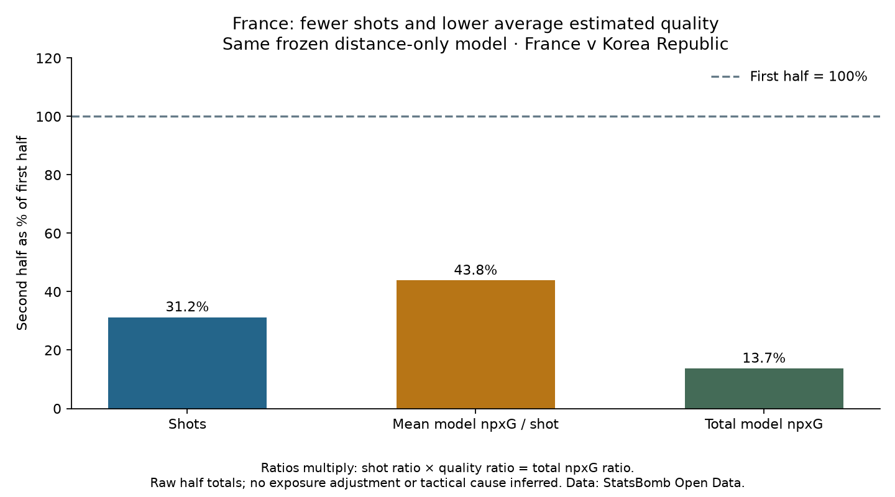

Football analyst training · Project lesson 32
Fewer shots, lower quality, or both?
“Our xG fell” is only the start of an explanation. Separate how often the team shot from the estimated quality of its average attempt.
1. One useful relationship
Total xG = shots × average xG per shot
Ten shots averaging 0.20 xG give 2.00 xG. Five shots averaging 0.10 give 0.50 xG. Half as many shots at half the quality gives one quarter of the total.
2. Our actual match
France: first half 16 shots × 0.0903 = 1.445 xG. Second half 5 shots × 0.0396 = 0.198 xG. Values are rounded for display; code uses full precision.

3. Multiply the remaining proportions
The second half retained about 31% of the shots and 44% of average quality. Multiplying 0.31 × 0.44 gives roughly 0.14: about 14% of the original xG remained. That is about an 86% reduction. Do not add the two percentage reductions.
The chart's dashed line is the first-half reference at 100%. These percentages are comparisons between halves, not a shot's chance of scoring.
4. Use it in a coach brief
“France took fewer shots after halftime, and average estimated chance quality also declined.” Follow that with a question to investigate in video, such as how France's entries into shooting positions changed. Raw half totals do not adjust for different stoppage time.
Run 32_shot_volume_quality.py in Spyder. total / shots calculates average quality; second / first calculates the retained proportion. A missing denominator gives None, not a made-up zero.
Practice with a realistic report check: if the shot count stays unchanged but total xG falls by 40%, what must happen to average xG per shot?
Check the reasoning
Average xG per shot must also fall by 40%, because the count factor stays unchanged. This identifies the arithmetic pattern, not its football cause.
Ask your teacher to check your wording or explain a calculation. This remains assisted project work; independent interpretation is pending.